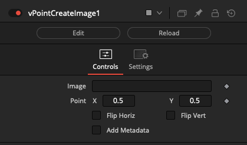
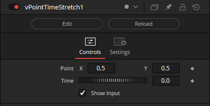
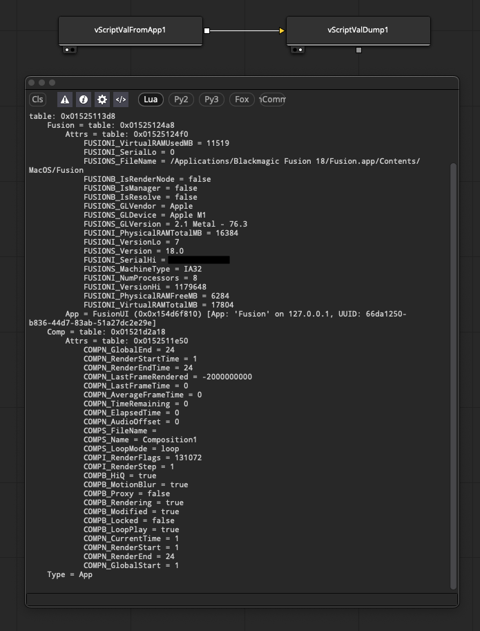
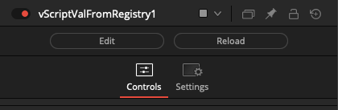
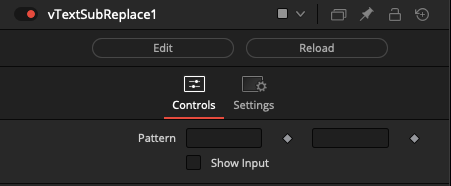

Vonk Node Reference Guide
Scrivener Export - Reformatting Needed!
This article is an export of a Scrivener document. It will definitely need at least some reformatting to work in Obsidian and MkDocs. Delete this note once the article's formatting has been fixed to some extent.
3D Nodes¶
3D Nodes
v3DToFile
Writes PointCloud3D data from the Fusion 3D node-graph to a file.
Connect a PointCloud3D node's output connection directly to the v3DToFile node:
PointCloud3D.Output -> v3DToFile.Input
The "Input 3D" connection accepts a wireless link style drag-and-drop attachment of a PointCloud3D node.
Clicking the "Show 3D Source" button will select the connected upstream node in the Nodes view, which displays the node in the Inspector view.
The "Point Cloud Format" ComboControl allows you to select the export format used. Options include: "XYZ ASCII (.xyz)", "PLY ASCII (.ply)", and "PIXAR USDA ASCII (.usda)".
The "Filename" text field supports Vonk vText based connections. This allows you to dynamically generate a filename via data node approaches.
The Filename field contents can include relative PathMap values like "Comp:/" that will be expanded at render time.
If a sub-folder is specified in the filename field, and it is missing at render time, the sub-folders will be re-created automatically when the file is saved to disk. This is helpful if you want to use per--timeline-frame numbered folders in the output filepath.
v3DSwitch
Switch between Fusion 3D objects
The "Which" control uses an integer number that starts at 1 and counts upwards to define the input connection port that is passed through to the output connection.
If you are using a logical comparator that works on a false/true based 0-1 number range and want to connect it to a v3DSwitch node's Which input connection, that works on a 1+ number range, simply insert a vNumberAdd node set to increment the number upwards by 1.
The "Show Which Input" checkbox is used to hide the Number datatype based input connection for the Which parameter in the Nodes view.
The "Show Active Input" checkbox is used as a visualization and diagnostics mode. When enabled, this control automatically toggles the visibility off for the inactive connection wirelines fed into the switch node. This approach makes it possible to visually see in a quick glance the source comp branch that is selected as the input and used by the Which control. All other inputs will be turned into hidden wireless inputs when not in use.
v3DProcessOpen
Launch a command-line process via popen.
The "Input 3D" field is used to connect 3D nodes that interact with Fusion's 3D workspace.
The "Text" field is used to define the executable program name and the command-line arguments you want to run from a shell session.
Typically a vTextSubFormat node is used to build the executable command line string that is supplied to the Text input on a vImageProcessOpen node.
If you need cross-platform support, you can use a vTextCreatePlatform or vTextCreatePlatformBrowse node to automatically define the per-OS specific elements like the executable program name and its file extension (.exe, .app, .bat, .sh, .command).
v3DSlashCommand
Run a Console Fuse SlashCommand as a node
v3DDelay
Creates a delay while passing a Fusion 3D object.
The "Input 3D" field is used to connect 3D nodes that interact with Fusion's 3D workspace.
The delay effect is measured in seconds. This node is implemented internally using the "bmd.wait()" function.
Among several use cases one can find for a tool that can momentarily pause rendering; it can be used to simulate a slow to render comp task when testing a render farm program. It also has applications when running a command line task via the Vonk 3DProcessOpen node the system requires a momentary pause to work reliably.
Array Nodes¶
Array Nodes
vArraySubReturn
Concatenates an array
vArrayKeys
Returns the keys present in an array
vArrayGetKey
Gets the value of a key in an array
vArrayGet
Gets the value of a key in an array
vArrayGetIndex
Creates Text from an array
vArrayFromLuaTable
Casts a Lua Table to an array
A Lua table structure is used as the underlying format for Fusion .comp files, Fusion macro/effects template .setting files, Reactor .atom packages, Fusion preference .prefs, and for Lua metadata table results.

vArrayFromMetadata
Casts metadata to an array
This node translates metadata records into a JSON based array structure. This supports tasks like parsing EXR formatted image metadata to extract Cryptomatte matte manifest records.
vArrayFromMediaIn
Casts a Resolve MediaIn MediaProps to an array
This makes it possible to read MediaPool/Edit page timeline information provided by a MediaIn node.
vArrayFromCSV
Creates a JSON array from a CSV row or column
The "Array Mode" control provides two options: "Extract Row", and "Extract Column". This makes it easy to select which axis of CSV data you would like to grab a sample from.
The "Ignore Header Row" checkbox will offset the first index position to start at line 2 in the CSV file. This will skip over a labelled header row in the source document to avoid that information being accessed as part of the ingested data.
The output from vArrayFromCSV is typically connected to an vArrayGetIndex node. This makes it possible to select an individual cell of data.
vArrayFromXML
Creates a JSON array from XML
The vArrayFromXML node works with XML formatted plain-text data. The XML data is read from a "vTextFromFile", "vTextFromNet", or "vTextFromZip" node.
The output from the vArrayFromXML node is a text data type. The XML records are converted on-the-fly and stored in a JSON based array structure.
This JSON array formatted data can be navigated and extracted using the Vonk provided "vArray" nodes along with the "vJSONGetElement" node.
vArrayFromYAML
Creates a JSON array from YAML
Technology Note: YAML is used as part of Film & TV production lens metadata workflows by Cine lenses with sensors and encoders like the Cooke Optics /i Technology metadata system. YAML metadata exchange is also starting to be used by other Cine lens manufacturers, in match-moving and tracking packages like SynthEyes and PFTrack, and as part of data exchange approaches like OpenTimelineIO, too.
Blackmagic BRAW media filmed on a BMD URSA Mini Pro 12K camera with a Cooke Optics PL-mount lens is capable of holding this YAML metadata recorded lens information internally. This is useful for supporting better data interchange between VP (Virtual Production) onset ICVFX (In-Camera VFX) departments and subsequent post-production workflows carried out by external vendors.
vArrayFromDataWindow
Casts DataWindow to an array
vArrayConcatenate
Concatenates an array
vArraySlice
Creates Text from an array
vArraySize
Gets the size of an array
vArrayJoin
Gets the value of a key in an array
vArrayMatch
Gets the value of a key in an array
The "Pattern" text field uses Lua Patterns to isolate values from a JSON based Array object. Additional information about patterns can be read in the Lua manual.
"cryptomatte/[a-z0-9]+/manifest" is a vArrayMatch Pattern that can be used to access Cryptomatte manifest image metadata. This information can be read from an EXR image via a Loader -> vArrayFromMetadata -> vArrayMatch node graph connection process.
Color Nodes¶
Color Nodes
vColorJuggler
vColorSet
This node was created by Chad Capeland.
The "Palette Array" field allows you to use HTML hex style RGB color values to fill in the background of image elements with the format of "RRGGBB" color values.
A hex number range includes the digits from 0-9 then it continues along to include the extra characters A-F as a representation of a single value.
Palette Array Sample Colors:
"FFFFFF" = White
"000000" = Black
"404040" = 25% Grey
"808080" = 50% Grey
"BFBFBF" = 75% Grey
"FF0000" = Red
"00FF00" = Green
"0000FF" = Blue
"00FFFF" = Cyan
"FF00FF" = Magenta
"FFFF00" = Yellow
The "Preserve Alpha" checkbox is used to retain the alpha channel input data.
The "Multiply by Alpha" checkbox is used to perform pre-multiplication math on the imagery. This control will make the transparent areas in the image, as defined by the source alpha channel data, turn black in the RGB channels.
The "Affect Canvas" checkbox is used to extend the color fill operation beyond the current DoD (Domain of Definition) region in the viewer window. When this checkbox is enabled, the background canvas color is pre-defined, if you ever expand the image larger than its original dimensions using a Crop node.
vColorPermutations
Base64 Nodes¶
Base64 Nodes
vBase64EncodeFromText
Base64 encodes text into a Fusion Text object.
This node converts a block of ASCII text into a Base64 format.
The "Text" input field is used to specify the source ASCII string to process.
vBase64EncodeFromFile
Base64 encodes a file into a Fusion Text object.
This node converts the contents of an external file into a Base64 format. This can help with tasks like creating PNG format imagery that can be embedded inside a Fuse GUI as a block of base64 encoded data.
The "File" input field is used to specify the filepath to a document.
vBase64DecodeImageFromFile
Base64 decodes an image into a file.
A Base64 encoded image is extracted from an external file, and converted into an image data type that can be displayed in the Fusion viewer window context.
The "Input" field is used to specify the filepath to an image that is currently Base64 encoded.
vBase64DecodeFromText
Base64 decodes text from a Fusion Text object.
A Base64 formatted block of text is converted back into plain ASCII text that can be passed downstream via a text data type.
The "Text" field is used to specify a block of text that is currently Base64 encoded.
The "Show Input" checkbox allows you to source the Text information from an external Text based data node connection.
vBase64DecodeImageFromText
Base64 decodes an image from a Fusion Text object.
This node extracts a Base64 encoded image resource. A Base64 formatted image is extracted from a block of text, and converted into an image data type that can be displayed in the Fusion viewer window context.
The "Text" field is used to specify a block of text that holds Base64 encoded image data.
The "Show Input" checkbox allows you to source the Text information from an external Text based data node connection.
vBase64ToHTML
Converts a Base64 encoded PNG image into an inline HTML <IMG> embed.
This node is useful to help prepare an inline Base64 encoded PNG image block. The most common use case for this node is to help fuse coders prepare new icons for use in a fuse's LabelControl element. This supports building Inspector view based icons for your custom fuses or macros.
In your fuse the base64 encoded image element would be placed into a variable that is linked into the LabelControl like this:
BrandLogo = [[
<center><img width="160" height="75" src='data:image/png;base64,...'/></center>
]]
InLabel = self:AddInput(BrandLogo, "Label",{
LINKID_DataType = "Text",
INPID_InputControl = "LabelControl",
LBLC_MultiLine = true,
INP_External = false,
INP_Passive = true,
IC_ControlPage = -1,
IC_NoLabel = true,
IC_NoReset = true,
})
The "IC_ControlPage = -1," tag will move the UI element above the Control Page tabs which makes the same icon visible as you switch between Control Pages.
The end result from adding the Base64 icon to a LabelControl is the ability to create a more polished UI for your fuse:
Metadata Nodes¶
Metadata Nodes
vMetadataToText
Creates a Fusion Text object from metadata
This node is similar to the GetMetadata.fuse with the addition of a "Key" input connection on the node that accepts a Text data type.
The "Key" field is used to specify the metadata record.
An example of an image metadata record "Key" entry would be the Loader node added attribute of "Filename".
vMetadataFromText
Creates a Fusion image with metadata added from text
This node is similar to the SetMetadata.fuse with the addition of input connections on the node that accepts a Text data type for the "Field Name", and "Field Value".
A metadata example for Fusion Viewer based Stereo3D "Over/Under" image content is:
Field Name: Stereo
Field Value: {Method = "vstack"}
A metadata example for Fusion Viewer based Stereo3D "Side by Side" image content is:
Field Name: Stereo
Field Value: {Method = "hstack"}
A metadata example for Fusion Viewer window based 360VR "Latitude/Longitude" image projection content is:
Field Name: Pano
Field Value: {Format = "LatLong"}
vMetadataFromMediaIn
Creates a Fusion image with MediaIn MediaProps metadata
This node is connected directly to a MediaIn node. It extracts the MediaProps record from a MediaIn node and places that data into the image's metadata Lua table.
The MediaProps based Metadata Lua table output is formatted like:
{
"MEDIA_FORMAT_TYPE":"PNG",
"MEDIA_HEIGHT":64,
"MEDIA_IS_SOURCE_RES":true,
"MEDIA_LAYER_DESC":[],
"MEDIA_MARK_IN":0,
"MEDIA_MARK_OUT":0,
"MEDIA_NAME":"Fusion-Logo.png"
"MEDIA_NUM_FRAMES":1,
"MEDIA_NUM_LAYERS":0,
"MEDIA_PAR":1,
"MEDIA_PATH":"/Users/vfx/Reactor/Deploy/Comps/Kartaverse/Vonk Ultra/Media/Fusion-Logo.png",
"MEDIA_SRC_FRAME_RATE":24,
"MEDIA_START_FRAME":0,
"MEDIA_WIDTH":64,
}
Filesystem Nodes¶
Filesystem Nodes
vFileSystemChmod
Change a file/folder's access permissions
The "File" textfield is used to specify a file or folder path.
The "Mode" control is used to specify the file mode (access permission) as an integer number. This is typically an octal value like "777", "755", etc.
The "Recursive" checkbox allows you to apply the access permission changes to items inside a folder.
Note: This node works on macOS and Linux systems only due to the use of the UNIX "chmod" utility.
vFileSystemCreateDir
Creates a new directory
This node will create a new directory. The "Text" field is used to define the desired folder path. Any required intermediate subfolders are created at the same time.
When enabled, the "[x] Use Parent Directory" checkbox allows you to enter a filepath into the "Text" field. The base folder path for the specified file will be used for the directory creation task.
vFileSystemDirExists
Check if a directory exists
vFileSystemFileCopy
Copies a file
This node allows you to define a "Source File" that will be copied to the disk-based filepath defined in the "Destination File" field.
The "Create Destination Directory" checkbox is useful if you need to dynamically create the output folder at the same time.
vFileSystemFileExists
Checks if a file exists
This node reads a filepath defined in the "Text" field and checks if the document exists on disk. The output is the number 0 if the file does not exist, and the number 1 if the file does exist.
If you want to connect this node to a Switch node's "Which" field, you will have to use a vNumberAdd node to offset the value up by one to go from a 0-1 range to a 1-2 range.
vFileSystemFileOpen
Opens a file
This node will open the "Source File" using the operating system's default file handler. The exact program launched is defined by the file extension.
vFileSystemFileSize
Returns the file size
This node takes a single filename as a text based input. It checks the file size of the document and returns the value in the unit of measure you specify.
The Unit field supports a wide range of file size output scales including:
"Byte (B)", "Kilobyte (KB)", "Kibibyte (KiB)", "Megabyte (MB)", "Mebibyte (MiB)", "Gigabyte (GB)", "Gibibyte (GiB)", "Terabyte (TB)", and "Tebibyte (TiB)".

The node has two output connections labelled "Output" and "OutputUnit". The "OutputUnit'' connection is handy if you need to create a visual overlay with a Text+ node of file size and want to indicate the scale of measure.
vFileSystemListFiles
Creates a Fusion Text object with a list of the folder contents
This node scans the contents of a folder path defined in the "Text" field. The output is created as a text based multi-line list of files or folders.
The "Pattern" field is used to enter part of the filename that you would like to match in the output. An asterisk character is supported as a wildcard symbol to help with partial filename entry. The Pattern field is typically used to help find files by their extension by entering a value like "*.exr", "*.png", "*.mov", "*.mp4", etc.
The Mode control can be set to "List Files" or "List Directories". This allows you to filter the output.
If you enable the "Export Fullpath" checkbox the full absolute filepath for each item is returned. If the checkbox is disabled, only the filename of the resource is returned without any folder path elements included.
The "Expand PathMaps" checkbox will automatically convert any relative filepaths into absolute filepaths on the output.
The "Skip Hidden Files" checkbox is used to ignore hidden files like ".DS_Store" and "Thumbs.db" documents, along with UNIX style filenames that start with a period. This helps reduce clutter on file listing based outputs.
vFileSystemMapPath
Expands a PathMap
This node automatically converts a relative filepath into an absolute filepath on the output.
This is useful if you want to supply an executable program name, or a filename to an operation like the ProcessOpen node that carries out command-line tasks.
vFileSystemRemoveDir
Remove a directory
vFileSystemRemoveFile
Rename a file or folder
vFileSystemRename
Rename a file or folder
vFileSystemSymlink
Create a Symbolic Link to a file or folder on macOS, Linux, and Windows
A Symlink (also known as a Symbolic link) can be thought of as a fancier (and far more posh) Linux file system style version of a Windows shortcut, or a macOS alias. This node creates Symlinks that are known as "soft-links".
If you are working with locally stored and managed temp files on a render node, instead of copying an image sequence, and doubling disk space usage, you can Symlink the files and save your storage for new data. Be sure to document in your workflow notes that these files are interim scratch files that are to be automatically cleaned up/removed, and not to be backed up or managed as assets.
Symlinks can be an attractive technique to use if you are copying a large quantity of files on disk, merely for the purpose of renaming the files temporarily in order to unify the naming convention of an image sequence. This happens when you are trying to manage original "camera named" footage into something tidy and symmetrical. This type of operation is typically done for convenience when doing data processing in a temp folder where you need to separate the intermediate files, and your output files from the source media.
How to tell a file is a Symlink
macOS / Linux
If you are looking at files on disk and trying to tell if it is a symlink or not, you can type "ls -la" into a Terminal window on macOS/Linux and you will see a file is indicated as a soft-link with an arrow listed next to the filename in the output like this:
% ls -la
CameraA-Link.0001.jpg -> /Users/vfx/Reactor/Deploy/Comps/KartaVR/WarpStitch/WarpStitch Under the Bridge/Media/CameraA.0001.jpg
In the macOS Finder folder browsing window a symlinked file has an "arrow icon" overlaid over the document icon:
Windows
If you are looking at files on disk and trying to tell if it is a symlink or not, you can type "dir" into a Command Prompt window on Windows and you will see a file is indicated as a soft-link with the word "<SYMLINK>" in the directory contents listing output like this:
dir
Volume in drive C has no label.
Volume Serial Number is X00X-XX00
Directory of C:\Users\vfx\AppData\Local\Temp\Vonk\0001
08/20/2022 10:51 PM <DIR> .
08/20/2022 10:51 PM <DIR> ..
08/20/2022 10:51 PM <SYMLINK> CameraA-Link.0001.jpg [C:\ProgramData\Blackmagic Design\Fusion\Reactor\Deploy\Comps\KartaVR\WarpStitch\WarpStitch Under the Bridge\Media\CameraA.0001.jpg]
1 File(s) 0 bytes
2 Dir(s) 277,488,435,200 bytes free
In the Windows Explorer folder browsing window a symlinked file has an "arrow icon" overlaid over the document icon as well:
Windows and Symlink Based File Permissions
If you want to create a symlink without using Administrator permissions on Windows systems, you need to open the Windows operating system "Settings > Privacy & security > For developers" preference to enable the "Developer Mode".
vFileSystemTouch
Touch a file/folder's creation and modification dates on macOS and Linux
vFileSystemURLOpen
Opens a file
This node opens a URL in an external web-browser. This is useful if you need to display reference material, or assist a user in checking out an asset from a web-based content management system.
Image Nodes¶
Image Nodes
vImageCreateLine
Creates a Line Shape object
vImageDelay
Creates a Delay while passing a Fusion Image object
The delay effect is measured in seconds. This node is implemented internally using the "bmd.wait()" function.
Among several use cases one can find for a tool that can momentarily pause rendering; it can be used to simulate a slow to render comp task when testing a render farm program. It also has applications when running a command line task via the Vonk ProcessOpen node and the system requires a momentary pause.
vImageToFile
Saves a jpg/exr/png/bmp/raw/fusepic image sequence to disk
The "File" control can be driven externally by a Text data type connection to the node.
vImageEXRToFile
Saves an EXR image to disk
The "Filename" control can be driven externally by a Text data type connection to the node.
vImageFromColor
Creates an image from a color
This node can act as a fuse based alternative to a Background node if you need to create a fixed size image and fill the image canvas with a flat color.
vImageEXRFromFile
Reads an EXR image from a file
The "Filename" control is used to define the image filename to load. It can be driven externally by a Text data type connection to the node.
The "EXR Part Number" control allows you to select another part element from a multi-part image document. This control can be a bit temperamental so make sure to save the comp document first before changing this value to avoid any loss of time and productivity.
The "Time Mode" control allows you to adjust how the frame number for image sequences is processed.
vImageFromClipboard
Grabs, saves, then loads the current clipboard image
The "Grab" button is used to capture the clipboard contents. It is a handy way to quickly load an image into the compositing node graph without needing to worry about the filename.
This node was designed to work with Fusion Standalone v9 on Windows.
vImageFromFile
Reads an Image object from a file
The "Input" control is used to define the image filename to load. It can be driven externally by a Text data type connection to the node.
The "Time Mode" control allows you to adjust how the frame number for image sequences is processed.
vImageFromNet
Reads an Image object from a network URL
The "Input" control is used to define the image URL such as an http://, https://, or file:/// based resource. The URL can be driven externally by a Text data type connection to the node.
The "File Type" ComboBox control helps Fusion decode the exact type of content being downloaded when the media is loaded into the Fusion viewer window context.
An example image you can use to test this node is an Eastern Canada weather satellite URL:
https://weather.gc.ca/data/satellite/goes_ecan_1070_100.jpg
{kind=link}

vImageFromZip
Reads an Image object from a zip archive
This node accesses an image resource that is stored inside a Zip archive using the Fusion v16+/Resolve v15+ based ZipIO library.
The "Zip File" field is used to define the filename of the zip archive.
The "Extract Image" field is used to define the image resource that is stored inside the zip archive.
Both attributes can be driven externally by a Text data type connection to the node.
vCryptomatte
This node is a version of the Cryptomatte fuse that supports an exposed Text data type based input connection to the "Matte List".
This is handy if you want to use the Vonk JSON + Metadata + Array features to create technical animations that browse through every matte element stored in the image's manifest records.
vImageProcessOpen
Launches a command-line process via popen
The "Text" field is used to define the executable program name and the command-line arguments you want to run from a shell session.
Typically a vTextSubFormat node is used to build the executable command line string that is supplied to the Text input on a vImageProcessOpen node.
If you need cross-platform support, you can use a vTextCreatePlatform or vTextCreatePlatformBrowse node to automatically define the per-OS specific elements like the executable program name and its file extension (.exe, .app, .bat, .sh, .command).
vImageSlashCommand
Run a Console Fuse SlashCommand as a node
vImageCreateTiles
Creates an image grid layout from an image sequence
This node makes it easy to create tiled "texture atlas" like grid layouts. If you need the imagery to be scaled down to a specific size, attach a resize or scale node to the image stream before you connect it to the vImageCreateTiles node.
The "Tiles X" control specifies how many images are stacked horizontally.
The "Tiles Y" control specifies how many images are stacked vertically.
The "Reverse X Order" and "Reverse Y Order" checkboxes are used to provide control over the image placement ordering when the grid layout is built. This allows you to start frame 1 at either of the 4 corners of the frame border.
vImageHook

vImageWireless
The vImageWireless node allows you to connect to other image based nodes in your comp without drawing the connection wirelines visually in the Flow/Nodes view. This can be helpful if you need to reduce clutter.
vImageSwitch
Switches between Fusion Image objects
The "Which" control uses an integer number that starts at 1 and counts upwards to define the input connection port that is passed through to the output connection.
If you are using a logical comparator that works on a false/true based 0-1 number range and want to connect it to a vNumberSwitch node's Which input connection, that works on a 1+ number range, simply insert a vNumberAdd node set to increment the number upwards by 1.
The "Show Which Input" checkbox is used to hide the Number datatype based input connection for the Which parameter in the Nodes view.
The "Show Active Input" checkbox is used as a visualization and diagnostics mode. When enabled, this control automatically toggles the visibility off for the inactive connection wirelines fed into the switch node. This approach makes it possible to visually see in a quick glance the source comp branch that is selected as the input and used by the Which control. All other inputs will be turned into hidden wireless inputs when not in use.
Number Nodes¶
Number Nodes
vNumberTimeSpeed
Time based operation on numbers
vNumberXSheet
Time based operation on numbers
vNumberTimeStretch
Time based operation on numbers
vNumberDelay
Creates a Delay while passing a Fusion Number object
The delay effect is measured in seconds. This node is implemented internally using the "bmd.wait()" function.
Among several use cases one can find for a tool that can momentarily pause rendering; it can be used to simulate a slow to render comp task when testing a render farm program. It also has applications when running a command line task via the Vonk ProcessOpen node and the system requires a momentary pause.
vNumberEndPID
Quit a program using its PID (Process ID) on macOS and Linux
It is possible to use the following terminal command to list a specific program's PID value:
ps aux | grep writeInSomeProgramNameHere
A sample output from this usage of the ps aux + grep command is:
% ps aux | grep safari
vfx 10239 0.0 0.0 408637584 1760 s000 S+ 4:21PM 0:00.00 grep safari
You can see a list of running programs and their PID values in the terminal using the "top" utility:
% top
Processes: 540 total, 3 running, 537 sleeping, 2455 threads 16:24:24
Load Avg: 1.05, 1.09, 1.17 CPU usage: 2.1% user, 2.48% sys, 95.50% idle
SharedLibs: 670M resident, 122M data, 71M linkedit.
MemRegions: 79919 total, 3430M resident, 570M private, 2089M shared.
PhysMem: 15G used (2487M wired), 204M unused.
VM: 204T vsize, 3823M framework vsize, 0(0) swapins, 0(0) swapouts.
Networks: packets: 14481172/7542M in, 10866206/9338M out.
Disks: 1618664/32G read, 799320/24G written.
PID COMMAND %CPU TIME #TH #WQ #PORT MEM PURG CMPRS PGRP PPID
171 WindowServer 6.5 47:39.13 17 3 1775- 220M- 9600K- 7792K 171 1
10555 top 5.2 00:00.58 1/1 0 27+ 6545K 0B 0B 10555 10519
466 Terminal 2.0 00:03.48 6/1 1 258+ 44M 15M 1664K 466 1
**10239 Safari 1.4 00:31.49 6 2 514 62M 0B 0B 10239 1**
It is also possible to see programs and their PID values in the macOS "Activity Monitor.app" utility. In the top right corner of the Activity Monitor window you can type in the name of the program in the search field to filter the results in the view down to what matters.
vNumberResolvePID
Returns the Resolve/Fusion PID (Process ID)
A PID value is an integer style number that is used by the operating system to track a running executable.
Often PID values are the identifier used to tell an external program to gracefully quit. A PID number can also be used by the "renice" terminal utility to help balance the compute load on a system by scaling back the resource hogging level of a single dominant program that is reducing the overall interactivity of the host computer.
vNumberResolveTimelineFPS
Returns the Resolve Timeline frame rate
This node is useful if you need to perform math operations that need to be informed of the Resolve project's current frame rate value.
vNumberSlashCommand
Run a Console Fuse SlashCommand as a node
vNumberProcessOpen
Launch a command-line process via popen
vNumberAbsolute
Returns the absolute value of a number
This node is handy if you need to remove the negative sign (-) element from a value so you only have the positive component of the number remaining.
vNumberMax
Returns the maximum of two numbers
vNumberStep
Generates a step function by comparing two values
vNumberSquareRoot
Returns the square root of a number
vNumberDivide
Returns the quotient of two numbers
vNumberMin
Returns the minimum of two numbers
vNumberModulus
Returns the remainder of the division of x by y that rounds the quotient towards zero
If a vNumberCompReqTime or vNumberCompCurrentTime node is piped into the "Dividend" input connection, you can use the modulus operator to create a looping number range with the Divisor control.
For example, a Divisor value of 10 will cause the output from modulus to cycle from 0-9 in loops 5 times as the playhead advances through a render start/end frame range of 0 - 50.
vNumberReciprocal
Returns the reciprocal of a number
vNumberClamp
Clamps a number to specific boundaries
vNumberFractional
Returns the fractional part of a number
vNumberSubtract
Returns the difference of two numbers
vNumberCeil
Returns the integer no greater than a number
This provides a way to round a floating point number to a whole number (an integer value) by rounding upwards to remove the digits to the right of the decimal place.
Ceil (ceiling) is the counterpoint to the floor rounding method.
vNumberPower
Returns the power of a number
vNumberFloor
Returns the integer no less than a number
This provides a way to round a floating point number to a whole number (an integer value) by rounding downwards to remove the digits to the right of the decimal place.
vNumberEase
Performs a specific interpolation between two numbers during a defined time duration
vNumberSign
Returns the sign of a number
The output from the node will be either "-1", "0", or "1".
vNumberIntegral
Returns the integral part of a number
vNumberSmoothstep
Generates a smoothstep function
vNumberMultiply
Returns the product of two numbers
vNumberMix
Performs a linear interpolation between two numbers
vNumberAdd
Returns the sum of two numbers
vNumberPartialPermutation
Returns the sum of two numbers
vNumberFactorial
Returns the product of all positive integers less than or equal to InNumber
vNumberCosine
Returns the cosine for a number in radians
vNumberArcTangent
Returns the inverse tangent for a number in radians
vNumberSine
Returns the sine for a number in radians
vNumberArcCosine
Returns the inverse cosine for a number in radians
vNumberHyperbolicSine
Returns the hyperbolic sine of a number in radians
vNumberHyperbolicTangent
Returns the hyperbolic tangent of a number in radians

vNumberHyperbolicCosine
Returns the hyperbolic cosine for a number in radians
vNumberDegreesToRadians
Returns the radian value as a number in degrees
vNumberTwoArgumentArcTangent
Returns the arc tangent of y/x (in radians) but uses the signs of both parameters to find the quadrant of the result

vNumberArcSine
Returns the inverse sine for a number in radians
vNumberRadiansToDegrees
Returns the degree value as a number in radians
vNumberTangent
Returns the tangent for a number in radians
vNumberFromArray
Creates a Number from an array
The "Index" control allows you to select the array item (cell) to return as a number based value.

vNumberAnd
Performs a logical AND operation on two numbers
vNumberOr
Performs a logical OR operation on two numbers
vNumberTernary
Compare a value and return one of two possible results
vNumberNotEqual
Compares two numbers to see if they are not equal
A zero (false) or one (true) based number is returned from the comparator operation.
vNumberEqual
Compares two numbers to see if they are equal
A zero (false) or one (true) based number is returned from the comparator operation.
vNumberNot
Performs a logical NOT operation on a number
vNumberGreater
Compares two numbers to see if Term 1 is greater than Term 2
A zero (false) or one (true) based number is returned from the comparator operation.
vNumberGreaterEqual
Compares two numbers to see if Term 1 is greater than or equal to Term 2
A zero (false) or one (true) based number is returned from the comparator operation.
vNumberLessEqual
Compares two numbers to see if Term 1 is less than or equal to Term 2
A zero (false) or one (true) based number is returned from the comparator operation.
vNumberLess
Compares two numbers to see if Term 1 is less than Term 2
A zero (false) or one (true) based number is returned from the comparator operation.
vNumberCompCurrentTime
Returns the comp's Current Time
The current time represents the point where the timeline playhead is positioned regardless of any temporal effects that might be happening.
vNumberCompProxy
Returns the comp's Proxy state
The True and False inputs on the node let you define a custom value that is returned for the Proxy logic state.
Setting the True and False inputs to a value of "True = 2" & "False = 1" makes it easier to directly connect the vNumberCompProxy output to a Switch node's Which input that starts the first switchable input connection as "Which = 1".
Note: There is a slight instability that can occur with this node if you rapidly toggle the "Prx" state On/Off while playing back footage in the Fusion timeline with the vNumberCompProxy node active. A solution to this issue is being explored.
vNumberCompProxyScale
Returns the comp's Proxy Scale
vNumberCompGlobalEnd
Returns the comp's Global End
This is the last frame of the full Fusion timeline range. This number is not always set to the same range as the render end timeline control.
vNumberCompRenderEnd
Returns the comp's Render End
This is the last renderable frame when a batch render is carried out.
vNumberCompReqTime
Returns the comp's request time
This is the currently requested frame that is being processed at render time. It supports temporal effects like the vTextAccumulator node that iterates over a frame duration.
vNumberCompFrameformat
Returns the comp's frame format
This node outputs a Width and Height parameter derived from the current comp's FrameFormat settings.
vNumberCompRenderStart
Returns the comp's Render Start
This is the first renderable frame when a batch render is carried out.
vNumberCompFPS
Returns the comp's frame rate
vNumberCompGlobalStart
Returns the comp's Global Start
This is the first frame of the full Fusion timeline range. This number is not always set to the same range as the render start timeline control.
vNumberFromText
Returns a number from a Fusion Text object
This node converts an ASCII text based string that holds numerical content like "5" into an actual number data type that can have math operations performed on the value. This is a useful step if you need to connect a numerical value to an Inspector based attribute on another node.
vNumberFromCSV
Creates a Fusion Number object by extracting a single cell from a CSV formatted block of text
The "Row" control is used to define the CSV line number to read.
The "Column" control is used to increment through each set of comma separated entries on a single line of CSV input data.
The "Ignore Header Row" checkbox will offset the first index position to start at line 2 in the CSV file. This will skip over a labelled header row in the source document to avoid that information being accessed as part of the ingested data.
vNumberRange
Creates a Fusion Number object
The range node creates a list of numbers that vary between the "From" and "To" values. The "Step" control increases the incremental rate of change in the output.
If the "From" value was set to 0, and the "To" value was set to 5 the output from the node would be formatted like:
vNumberIntegerCreate
Creates an integer Fusion Number object
This node creates whole number based values with no floating point decimal based component. This node is an excellent choice if you want to drive the "Which" attribute on any of the Switch nodes available in Vonk.
vNumberCreateArch
Creates a unique Fusion Number object per CPU architecture
If the fuse is rendered on a 32-bit Intel/AMD CPU based system a value of 1 is returned. (Note: Fusion Studio v8+ were only released as 64-bit builds so it is of low likelihood you are going to see an x86 value returned from this node.)
If the fuse is rendered on a 64-bit Intel/AMD CPU based system a value of 2 is returned.
If the fuse is rendered on an ARM 64-bit system, like an Apple Silicon CPU, a value of 3 is returned.
vNumberCreateBool
Returns a 0-1 range integer Fusion Number object
This node uses a checkbox control to output a true (1) or false (0) logic state.
Usage tip: This node's boolean like checkbox value can be used to drive a Switch node's "Which" control. This checkbox control makes it a single click operation in a macro node (MacroOperator or GroupOperator) to be able to toggle between an input1 / input2 connection. To do this you simply have to insert an vNumberAdd node, (that is set to increment the value up by 1), between the vNumberCreate node's output (0-1) logic state, and the Switch node:
vNumberCreateBool.Output > vNumberAdd.Term1 > Switch.Which
Node setting to change:
vNumberAdd.Term2 = 1
vNumberCreatePlatform
Creates a unique Fusion Number object per OS platform
If the fuse is rendered on a macOS system a value of 1 is returned.
If the fuse is rendered on a Windows system a value of 2 is returned.
If the fuse is rendered on a Linux system a value of 3 is returned.
vNumberCreateRandom
Creates a Fusion Number object
This node uses a pseudo-random number generator to create a number that fits within the upper and lower range that is defined. If you animate the seed value, the number will change on each frame.
vNumberCreate
Creates a Fusion Number object
This node is the starting point for most number data type based node graphs. The output is a floating point number that can go up to "1e+38".
vNumberFromVector
Returns a number from a vector
vNumberToMatrix
Returns a matrix from a number
vNumberFromMatrix
Returns a number from a matrix
vNumberWireless
The vNumberWireless node allows you to connect to other number based nodes in your comp without drawing the connection wirelines visually in the Flow/Nodes view. This can be helpful if you need to reduce clutter.
vNumberSwitch
Switches between Fusion Number objects
The "Which" control uses an integer number that starts at 1 and counts upwards to define the input connection port that is passed through to the output connection.
If you are using a logical comparator that works on a false/true based 0-1 number range and want to connect it to a vNumberSwitch node's "Which" input connection, that works on a 1+ number range, simply insert a vNumberAdd node set to increment the number upwards by 1.
The "Show Which Input" checkbox is used to hide the Number datatype based input connection for the Which parameter in the Nodes view.
The "Show Active Input" checkbox is used as a visualization and diagnostics mode. When enabled, this control automatically toggles the visibility off for the inactive connection wirelines fed into the switch node. This approach makes it possible to visually see in a quick glance the source comp branch that is selected as the input and used by the Which control. All other inputs will be turned into hidden wireless inputs when not in use.
Point Nodes¶
Point Nodes
vPointCreate
Create a Fusion Point object
vPointCreateImage
Create a Fusion Point object with an image visible in the background

The "Add Metadata" checkbox creates image output metadata entries for the point coordinates formatted as:
XOffset = 0.5
YOffset = 0.5
If you enable the viewer window's "Metadata" sub-viewer entry you can quickly see the information that is appended to the image output stream.
vPointFromMousePos
Return a Fusion Point object that holds the current mouse X & Y cursor position
Coord Mode
The "Coord Mode" multi-button control allows you to define the units used when reporting the mouse position. The "Native" option will return the original unmodified "raw" cursor position coordinates. The "Normalized" option will return a 0-1 range value for the X/Y cursor position.
Screen Dimensions
The normalization process can be carried out using either the "Manual Entry" option which is based upon manually entered screen width and height parameters along with a screen ui size scaling parameter, or through using the "Fu Prefs" option which is based upon the existence of a Fusion preferences "Layout" page based saved window size value.
If no Fusion preferences based window sizing parameters are found you will see an error reported to the Console window when the "Fu Prefs" option is enabled. The message reported is:
[Error] The Fusion window size preference is undefined. Please save an initial window position in the Layout Preference section.
Note: Make sure to load the vPointFromMousePos node's output into the left or right viewer window before displaying a downstream node like a b-spline shape and a Transform node that is driven by the mouse position value via a "Connect To" approach.
Failure to view the vPointFromMousePos node before displaying the downstream node will likely lead to lockups in Fusion v18.
vPointFromNumber
Return a Fusion Point object from two numbers
vPointToNumber
Return a pair of numbers from a Fusion Point object
If you want a quick way to be able to view the individual number outputs from this node in the viewer window, try adding a pair of pipe-routers to the output connections.
vPointCreateRandom
Create a Fusion Point object with a random position
vPointAbsolute
Returns a Fusion Point object with an absolute value
vPointMix
Performs linear interpolation between two Fusion Point objects
vPointPower
Returns the power of a Fusion Point object
vPointTimeStretch
Time based operations on a Fusion Point object

vPointTimeSpeed
Time based operations on a Fusion Point object
vPointDelay
Creates a Delay while passing a Fusion Point object

vPointFromText
Returns a Fusion Point object from two Text inputs
vPointToText
Return a pair of Text objects from a Fusion Point object

vPointAdd
Returns the sum of two Fusion Point objects
This node can be used to apply a positive offset to the origin of the 1st point by the 2nd point's displacement distance.
vPointClamp
Clamp a Fusion Point object to specific boundaries
This acts as a hard limiter on the range of numbers that can pass through the Point control. Numbers that exist below the minimum range, or above the maximum range are clipped to those boundaries.
vPointDivide
Returns the quotient of two Fusion Point objects
This node can be used to apply a scale reducing effect to the origin of the 1st point by the 2nd point's displacement distance.
vPointModulus
Returns the remainder of the division of a Fusion Point object that rounds the quotient towards zero
The "Divisor X" and "Divisor Y" controls make it possible to create a looping effect that wraps the Point locator on each axis of motion so it stays within a range of 0 to (one less than the Divisor value).
vPointMultiply
Returns the product of two Fusion Point objects
This node can be used to apply a scale enlargement effect to the origin of the 1st point by the 2nd point's displacement distance.
vPointSubtract
Returns the difference of two Fusion Point objects
This node can be used to apply a negative offset to the origin of the 1st point by the 2nd point's displacement distance.
vPointAngle
Measure the angle in degrees between two Fusion Point objects
The output from this node is a Number datatype that reports the angle between Point1 and Point2.
vPointLength
Measure the distance between two Fusion Point objects
The output from this node is a Number datatype that reports the distance between Point1 and Point2.
If you have an image loaded in the viewer window, and then select the vPointLength node to edit its attributes in the Inspector tab, you will see the Point1 and Point2 locator handle overlays onscreen.
vPointSwitch
Switch between Fusion Point objects
vPointWireless
The vPointWireless node allows you to connect to other 2D Point datatype based nodes in your comp without drawing the connection wirelines visually in the Flow/Nodes view. This can be helpful if you need to reduce clutter.
ScriptVal Nodes¶
ScriptVal Nodes
vScriptValCreate
Create a Fusion ScriptVal object
The ScriptVal datatype in Fusion is used to pass Lua tables that hold arbitrary data between nodes. This makes it possible to create custom c-code struct like records that travel through the node graph in a seamless fashion.
An example of Lua table formatted information is:
{
num = 3.14,
foo = "Hello",
snafu = {
tarfu = "Fuse",
},
bar = "World",
}
vScriptValFromApp
Create a Fusion ScriptVal object from the Resolve/Fusion application and comp UserData
This node explores the output from Resolve() and Fusion(), along with the current composition attributes via GetAttrs(). The result of this process is a very detailed memory dump of the active parameters users typically interface with.
In Resolve it is possible to see a report of the Project Manager, Project, Media Pool, Clips, Folders, Markers, and Timelines.
Sample "vScriptValFromApp" output from Fusion Studio:

Sample "vScriptValFromApp" output from Resolve Studio:
vScriptValFromArray
Casts a JSON array into a ScriptVal object
This node takes a Text datatype based JSON array as the input which is translated into a ScriptVal based output.
The "Sort List" checkbox will alphabetically sort the Lua table formatted results generated by the node.
vScriptValToArray
Casts a ScriptVal object into a JSON array
This node takes a ScriptVal datatype as the input which is translated into a Text based JSON array output.
vScriptValFromDate
Create a Fusion ScriptVal object from the Lua os.date() table output
vScriptValFromListFiles
Create a Fusion ScriptVal object from a bmd.readdir() listing of files

vScriptValFromListFonts
Create a Fusion ScriptVal object from a listing of fonts
Sample output from the "vScriptValFromListFonts" node when formatted as text based Lua table output looks like:
{
"Academy Engraved LET",
"Al Bayan",
"Al Nile",
"Al Tarikh",
"American Typewriter",
"Andale Mono",
"Apple Braille",
"Apple Chancery",
"Apple SD Gothic Neo",
"Apple Symbols",
"AppleGothic",
"AppleMyungjo",
"Arial",
"Arial Black",
"...",
}

vScriptValFontMetrics
Return font measurements as a Fusion ScriptVal object
Sample output from the "vScriptValFontMetrics" node when formatted as text based Lua table output looks like:
{
FontMetrics = {
TypeName = "TextStyleFontMetrics",
CharWidthAverage = 0,
UnderlineThickness = 123,
TextExternalLeading = 0,
TextInternalLeading = 0.0232686980609418,
TypeNamePtr = "TextStyleFontMetrics*",
TextDescent = 0.0175623268698061,
Scale = 3610,
TextAscent = 0.0624376731301939,
FontSize = 0.1,
CharWidthSpace = 0.0189196675900277
},
Font = "Arial Black",
Text = "Hello",
Style = "Regular",
Size = 0.1
}
vScriptValFromEXRFile
Convert OpenEXR header, part, and channel data into a ScriptVal
This node is useful for generating a listing of the channel and part data from an EXR image without having to load the pixel data into a frame buffer.
Sample output from the "vScriptValFromEXRFile" node when formatted as text based Lua table output looks like:
{
Source = "/Volumes/Farm/Houdini Karma.exr",
Filename = "Houdini Karma.exr"
Ext = ".exr",
Type = "EXRPart",
Parts = {
{
Name = "C",
Width = 3840,
Height = 1600,
PixelAspectRatio = 1,
CenterX = 0,
CenterY = 0,
Channels = {
{
XSampling = 1,
YSampling = 1,
PLinear = false,
Name = "A",
Type = 1
},
{
XSampling = 1,
YSampling = 1,
PLinear = false,
Name = "B",
Type = 1
},
{
XSampling = 1,
YSampling = 1,
PLinear = false,
Name = "G",
Type = 1
},
{
XSampling = 1,
YSampling = 1,
PLinear = false,
Name = "R",
Type = 1
}
}
},
},
}
vScriptValFromMetadata
Casts image metadata to a Fusion ScriptVal object
This node takes an image as the input. The output is the image metadata encoded in a ScriptVal object format.
vScriptValToMetadata
Creates a Fusion image with metadata added from a ScriptVal object
This node has two input connections which are used for connecting an image and a ScriptVal data type. The output from the node is the image with metadata added.
vScriptValFromPoint
Creates a ScriptVal from a point
The ScriptVal formatted Lua table output of an X/Y 2D Point looks like this:
{
0.5,
0.5
}
vScriptValToPoint
Return a Fusion Point object from a ScriptVal
vScriptValFromPingHosts
Create a Fusion ScriptVal object from a Fusion ping hosts subnet scan
vScriptValFromPrefs
Create a Fusion ScriptVal object from the Fusion preferences
The ScriptVal formatted Lua table output looks like this:
{
{
Platform = "Windows",
Version = "18.0",
Hosts = {
"FusionServer",
"Fusion",
"Fusion",
"Fusion"
},
HostName = "R1",
IP = "10.20.30.1",
UserName = "R1$"
},
}
vScriptValFromRegistry
Create a Fusion ScriptVal object from the Fusion registry

vScriptValFromXML
Creates a ScriptVal object from XML
This node accepts a text based input in an XML format. The result is translated into a ScriptVal object on the output.
vScriptValFromCustomData
Create a Fusion ScriptVal object from Custom Data
The "Text" control is used to specify the key used for the CustomData record. CustomData entries use a dot syntax for the hierarchy. If you define a lower level name it will return the full Lua table structure with multiple preference items at the same time.
The "Context" control reads the CustomData from either the Fusion scope, or the Comp scope.
Fusion Scope
The Fusion scope CustomData entries are stored on disk at the PathMap location of:
Profiles:/Default/Fusion.prefs
In the "Fusion.pref" file Lua table, the Fusion scope CustomData entries are found under:
Global.Script.GlobalData = {}
Using Lua you can save a CustomData setting into Fusion:
-- Fusion Scope
fusion:SetData("Vonk.Version", 1)
Comp Scope
When using Comp scope CustomData entries, this is what the Lua table formatted CustomData records look like in a .comp file:
Composition {
CustomData = {
Vonk = {
Date = {
hour = 18,
min = 39,
wday = 7,
day = 24,
month = 9,
yday = 267,
sec = 44,
year = 2022,
isdst = true
},
Version = 1,
UUID = "86cb495e-36ea-43eb-8761-7e27cf7ea947"
}
},
}
Using Lua you can save a CustomData setting into a comp:
-- Comp Scope
comp:SetData("Vonk.Version", 1)
vScriptValToCustomData
Save a Fusion ScriptVal object to Custom Data
The "Text" control is used to specify the key used for the CustomData record. CustomData entries use a dot syntax for the hierarchy. If you define a lower level name it will return the full Lua table structure with multiple preference items at the same time.
The "Context" control writes the CustomData to either the Fusion scope, or the Comp scope.
vScriptValFromFile
Reads a Fusion ScriptVal object from a file
This node reads a text formatted version of a Lua table structure from disk. The result is translated into a ScriptVal object on the output.
vScriptValToFile
Writes a Fusion ScriptVal object to a file
This node writes a text formatted version of a Lua table structure to disk.
vScriptValFromText
Convert a Fusion Text object into a ScriptVal
This node expects a text formatted version of a Lua table structure as the input. The result is translated into a ScriptVal object on the output.
vScriptValFromBinaryFile
Reads a Fusion ScriptVal blob encoded object from a binary file
The binary file data is Base64 encoded and placed in a Lua table structure. A sample output from this encoding process looks like:
{
Base64 = "SGVsbG8gV29ybGQh",
Base64Size = 16,
BinarySize = 12,
Ext = ".txt",
Filename = "Hello.txt"
Source = "/Users/vfx/Desktop/Hello.txt",
Type = "File",
}
vScriptValToBinaryFile
Writes a Fusion ScriptVal blob encoded object to a binary file
vScriptValFromJSON
Casts JSON text into a ScriptVal object
This node takes a Text datatype based JSON as the input which is translated into a ScriptVal datatype based output.
The "Sort List" checkbox will alphabetically sort the Lua table formatted results generated by the node.
vScriptValToJSON
Casts a ScriptVal object into JSON text
This node takes a ScriptVal datatype as the input which is translated into a JSON Text datatype based output.
The "Sort List" checkbox will alphabetically sort the Lua table formatted results generated by the node.
vScriptValToText
Convert a Fusion ScriptVal object into Text
The Text based multi-line output from this node can be displayed in the Inspector view with the vTextViewer node.
vScriptValGetToText
Gets the value of a ScriptVal key
vScriptValGetElementToText
Gets an element from a ScriptVal array
An example of array like elements in a Lua table would look like this:
{
"1",
"2",
"3",
"4",
"5",
"6",
"7",
"8",
"9",
"10",
}
The "Index" control is used to access individual entries from a ScriptVal array like object. The first item is accessed at Index position 1.
The output from the vScriptValGetElementToText node is a text based data type. It is possible to translate the text based output from this node into numerical values via the vNumberFromText node.
vScriptValGetToNumber
Gets the value of a ScriptVal key as a Fusion Number
The output from the vScriptValGetToNumber node is a Number based data type that can be used to drive number based controls in the Inspector view like transforms, rotations, scale, angle, or other parameters. You can also use the Number based output from the vScriptValGetToNumber node to carry out further node-based math operations with nodes like vNumberAdd, vNumberSubtract, vNumberMultiply, vNumberDivide, etc..
vScriptValGetToTable
Gets the value of a ScriptVal key as a table
The output from the vScriptValGetToTable node is a ScriptVal based data type.
vScriptValGetElementToTable
Gets an element from a ScriptVal array as a table
The "Index" control is used to access individual entries from a ScriptVal array like object. The first item is accessed at Index position 1.
The output from the vScriptValGetElementToTable node is a ScriptVal based data type.
vScriptValKeysToText
Returns the keys present in a ScriptVal object
vScriptValKeysToTable
Returns the keys present in a ScriptVal object as a table
vScriptValToNumber
Convert a Fusion ScriptVal object into a Number
vScriptValFromNumber
Convert a Fusion Number object into a ScriptVal
vScriptValRemoveElement
Removes an element from a ScriptVal array using its index position
vScriptValTrimElement
Extract a range of elements from a ScriptVal array as a table
This node is useful for creating animated vector graphics that are revealed over time when your 2D point data is encoded into a ScriptVal Lua table structure that represents a polyline shape.
vScriptValDoFile
Return a ScriptVal object from running an external Lua script
vScriptValDoString
Return a ScriptVal object from running a string of Lua code
The ScriptVal based input connection on the node can be accessed in the script using a Lua table variable named "tbl".
The ScriptVal based output connection on the node receives the data that is defined by the "return" command.
The "Script Header Wire" input is used to specify a text datatype connection of code that is appended to the top of the Lua Script field contents when run. The script content connected to the Script Header Wire field is typically sourced from a vTextCreateMultiline or vTextFromFile node.
The vScriptValMerge node can be used to combine multiple ScriptVal objects before they are passed into the vScriptValDoString node.
In your Lua Script code you can iterate through each record in the Lua table data using:
for i, v in ipairs(tbl) do
end
If you need to temporarily troubleshoot the internals of what your code is doing in the vScriptValDoString node there are two diagnostic checkbox controls labelled "Show Code" and "Show Dump". The output from those options is displayed in the Console window. For performance reasons you probably want to leave those options turned off most of the time when rendering long sequences in Fusion to reduce the Console logging overhead.
vScriptValCreatePolyline
Create a polygon line shape from a ScriptVal based Lua table of XY point pairs
An example of 2D point like elements in a Lua table would look like this:
{
{
0.382075787528567,
0.534720150858805
},
{
0.436349336750095,
0.490753326992875
},
{
0.486955559603984,
0.440547877640415
},
{
0.531495059415565,
0.386469304121596
},
{
0.568050230127849,
0.331244047492371
},
{
0.595285357663032,
0.277804252649087
},
{
0.612508622697929,
0.229116724236359
},
{
0.619692622456641,
0.188006456120492
}
}
vScriptValAccumulator
Temporally concatenateScriptVal elements into one table
This node can be thought of as a ScriptVal based merge node that works across a time range. It can be used to create Lua Table based array elements that are built over time from dynamically generated tables of data.
The "Start Frame" control will often be driven by a vNumberCompRenderStart or vNumberCompGlobalStart node.
The "End Frame" control will often be driven by a vNumberCompRenderEnd or vNumberCompGlobalEnd node.
The "Step" control allows for frame skipping to occur.
The "Sort List" checkbox works on a line-by-line basis to alphabetically sort the results generated by the node.
If you want to stop a vScriptValAccumulator node from re-rendering on subsequent frames in the Fusion timeline, you can add a "vScriptValTimeSpeed" node right afterwards and set the Speed to 0 and the Delay to 0.
The data combined together by a vScriptValAccumulator node can be separated again into individual items using the vScriptValGetElementToTable node.
vScriptValTimeSpeed
Time based operation on ScriptVal objects
vScriptValTimeStretch
Time based operation on ScriptVal objects
vScriptValCount
Count the number of items in a Fusion ScriptVal object
This node returns a number data type that indicates how many array elements exist at this level in a ScriptVal hierarchy. This return value could be used to drive a vTextAccumulator node's EndFrame attribute if you wanted to increment through each of the array elements.
vScriptValDump
Dump the contents of a Fusion ScriptVal object to the Console
vScriptValMerge
Dynamically join ScriptVal elements into one table
vScriptValFromYAML
Casts YAML text into a ScriptVal object
Technology Note: YAML is used as part of Film & TV production lens metadata workflows by Cine lenses with sensors and encoders like the Cooke Optics /i Technology metadata system. YAML metadata exchange is also starting to be used by other Cine lens manufacturers, in match-moving and tracking packages like SynthEyes and PFTrack, and as part of data exchange approaches like OpenTimelineIO, too.
Blackmagic BRAW media filmed on a BMD URSA Mini Pro 12K camera with a Cooke Optics PL-mount lens is capable of holding this YAML metadata recorded lens information internally. This is useful for supporting better data interchange between VP (Virtual Production) onset ICVFX (In-Camera VFX) departments and subsequent post-production workflows carried out by external vendors.
vScriptValSwitch
Switch between Fusion ScriptVal objects
The "Which" control uses an integer number that starts at 1 and counts upwards to define the input connection port that is passed through to the output connection.
If you are using a logical comparator that works on a false/true based 0-1 number range and want to connect it to a vScriptValSwitch node's Which input connection, that works on a 1+ number range, simply insert a vNumberAdd node set to increment the number upwards by 1.
The "Show Which Input" checkbox is used to hide the Number datatype based input connection for the Which parameter in the Nodes view.
The "Show Active Input" checkbox is used as a visualization and diagnostics mode. When enabled, this control automatically toggles the visibility off for the inactive connection wirelines fed into the switch node. This approach makes it possible to visually see in a quick glance the source comp branch that is selected as the input and used by the Which control. All other inputs will be turned into hidden wireless inputs when not in use.
vScriptValWireless
Wirelessly link to ScriptVal nodes
The vScriptValWireless node allows you to connect to other ScriptVal based nodes in your comp without drawing the connection wirelines visually in the Flow/Nodes view. This can be helpful if you need to reduce clutter.
Shape Tree Nodes¶
Shape Tree Nodes
vShapeSwitch
Switch between Fusion ShapeTree objects
The "Which" control uses an integer number that starts at 1 and counts upwards to define the input connection port that is passed through to the output connection.
If you are using a logical comparator that works on a false/true based 0-1 number range and want to connect it to a vShapeSwitch node's Which input connection, that works on a 1+ number range, simply insert a vNumberAdd node set to increment the number upwards by 1.
The "Show Which Input" checkbox is used to hide the Number datatype based input connection for the Which parameter in the Nodes view.
The "Show Active Input" checkbox is used as a visualization and diagnostics mode. When enabled, this control automatically toggles the visibility off for the inactive connection wirelines fed into the switch node. This approach makes it possible to visually see in a quick glance the source comp branch that is selected as the input and used by the Which control. All other inputs will be turned into hidden wireless inputs when not in use.
Note: A Fusion ShapeTree datatype accessibility bug was reported to BMD at the end of July 2022. This bug affects the usability of all ShapeTree based fuses in Fusion v17-v18.0.x. Hopefully a bugfix from BMD will solve an issue where a connected sRender nodes' input is rendered as a transparent canvas if a Fuse is placed upstream in the toolchain.
vShapeWireless
Create wireless links to Fusion ShapeTree objects
The vShapeWireless node allows you to connect to other shape based nodes in your comp without drawing the connection wirelines visually in the Flow/Nodes view. This can be helpful if you need to reduce clutter.
Note: A Fusion ShapeTree datatype accessibility bug was reported to BMD at the end of July 2022. This bug affects the usability of all ShapeTree based fuses in Fusion v17-v18.0.x. Hopefully a bugfix from BMD will solve an issue where a connected sRender nodes' input is rendered as a transparent canvas if a Fuse is placed upstream in the toolchain.
JSON Nodes¶
JSON Nodes
vJSONToFile
Writes a JSON string into a file
The "File" text field is used to specify the filename of the JSON document to be written to disk.
The JSON file will be saved when the node is viewed/rendered. The contents of the JSON file is sourced from the text based input connection on the node.
vJSONFromNet
Reads a JSON string from a network URL
The network-based JSON resource downloading functionality provided by this node makes it possible to drive a composite from an external cloud based datasource.
This means IoT (Internet of Things) electronic sensors, sports statistics, financial data, or any other web enabled datasource can be used on-the-fly to supply Text, Number, Matrix, Array, or other values to nodes in the comp.
vJSONFromFile
Reads a JSON string from a file
The "Input" text field is used to specify the disk-based filename of the JSON document to be read.
The JSON file will be loaded when the node is viewed/rendered. The contents of the JSON file is returned via a text based data type output connection on the node.
vJSONGet
Gets the value of a JSON key
The "Key" text-field is used to select and isolate a specific entry from a JSON file.
The output from the vJSONGet node is a text based data type.
You can stack several vJSONGet nodes in a row to browse upwards in the hierarchy of a nested JSON structure.
It is possible to translate this text based output from this node into numerical values via the vNumberFromText node. This is a useful step if you want to perform math operations downstream of this node, or if you need to connect a numerical value to an Inspector based attribute on another node.
vJSONGetElement
Gets the element of a JSON array
The "Index" control is used to access individual entries from a JSON array type of object.
The node expects a text based JSON array object as the input.
The output from the vJSONGetElement node is a text based data type. It is possible to translate the text based output from this node into numerical values via the vNumberFromText node.
The first item is accessed at Index position 1.

vJSONSet
Sets a new key value pair in a JSON table
The "Key" text-field lets you enter the name of the JSON element to be modified/inserted. The 2nd text field is used for the "Value" field which holds the actual data you want to store.
The vJSONSet node makes it possible to create new JSON data structures that can be saved to disk using a vJSONToFile node.
vJSONCountElement
Counts the elements in a JSON array
The node expects a text based JSON array object as the input.
This node returns a number data type that indicates how many array elements exist at this level in a JSON hierarchy. This return value could be used to drive a vTextAccumulator node's EndFrame attribute if you wanted to increment through each of the array elements.
Text Nodes¶
Text Nodes
vTextAccumulator
Temporally concatenates a text string over a frame range
This node can be thought of as a text based merge node that works across a time range. It can be used to create IFL (image file lists) or other types of results that are built over time by dynamically generated strings of text.
The "Start Frame" control will often be driven by a vNumberCompRenderStart or vNumberCompGlobalStart node.
The "End Frame" control will often be driven by a vNumberCompRenderEnd or vNumberCompGlobalEnd node.
The "Step" control allows for frame skipping to occur.
The "Separator" text field is used to define the character placed between each text element that is concatenated (merged) together. You might want to use a separator like a space, a comma, a semicolon, or a newline (\n), return (\r), or a tab (\t).
The "Sort List" checkbox works on a line-by-line basis to alphabetically sort the results generated by the node.
The "Remove Duplicates" checkbox can be used to remove any lines that have an identical output that pre-exists in the results.
The counterpoint to the vTextAccumulator node is the vTextReadLine node that can break apart a multi-line text block into single line elements.
If you want to stop a vTextAccumulator node from re-rendering on subsequent frames in the Fusion timeline, you can add a "vTextTimeSpeed" node right afterwards and set the Speed to 0 and the Delay to 0.
vTextTimeSpeed
Time based operation on text
vTextTimeStretch
Time based operation on text
vTextOrderShuffle
Shuffles the order of a Fusion Text object
The "Text" field contents will be output with a randomized order. This is done using an approach known as a Fisher--Yates shuffle.
If you typed in "Hello Shuffle World!" the output would be "Wdool uhSffod rlHoe!".
vTextOrderReverse
Reverses the order of a Fusion Text object
The "Text" field contents will be output letter-by-letter in a right-to-left mirrored fashion that reverses the text's placement.
If you typed in "Hello Shuffle World!" the output would be "!dlroW elffuhS olleH".
vTextResolvePID
Returns the Resolve/Fusion PID (Process ID)
A PID value is an integer style number that is used by the operating system to track a running executable.
Often PID values are the identifier used to tell an external program to gracefully quit. A PID number can also be used by the "renice" terminal utility to help balance the compute load on a system by scaling back the resource hogging level of a single dominant program that is reducing the overall interactivity of the host computer.

vTextResolveProjectName
Returns the current Resolve project name
This node outputs a Text based string that holds the name of the current Resolve editing project as listed in the Resolve "Project Manager" window.
vTextToFile
Writes a Text string to a file
The "Input" text-field holds the textual content that is saved to disk.
The "File" text-field specifies the filename for the document.
Both of these controls can be driven externally by enabling the "Show Input" checkbox. You would then connect vTextCreate or vTextSubFormat like text based data nodes to the input connections on the vTextToFile node.
vTextFromZip
Reads a Text string from a zip archive
This node accesses a plain-text formatted resource that is stored inside a Zip archive using the Fusion v16+/Resolve v15+ based ZipIO library.
The "Zip File" field is used to define the filename of the zip archive.
The "Extract File" field is used to define the resource that is stored inside the zip archive.
Both attributes can be driven externally by a Text data type connection to the node.
vTextFromNet
Reads a Text string from a network URL
The "Input" text-field is used to supply the http://, https://, or file:// based URL.
The network-based text resource downloading functionality provided by this node makes it possible to drive a composite from an external cloud based datasource like a CSV (Comma Separated Value), TSV (Tab Separated Value), SVG (Scalable Vector Graphics), Fusion Macro .setting, Fusion .comp, etc.
This means IoT (Internet of Things) electronic sensors, sports statistics, financial data, or any other web enabled datasource can be used on-the-fly to supply Text, Number, Matrix, Array, or other values to nodes in the comp.
vTextFromComp
Reads text strings from a Fusion .comp file
This node tunnels inside of an external Fusion .comp file on disk and extracts string elements. These text strings are typically filepaths.
The "File" text field specifies which .comp file should be parsed.
The "Match" text field helps sort the content returned to filter the results.
The "File Exists" checkbox lets you further filter the results by looking on disk to see if the text string lines up with an actual file that exists.
The "Expand PathMaps" checkbox will automatically convert any relative filepaths into absolute filepaths on the output.
The "Sort List" checkbox works on a line-by-line basis to alphabetically sort the results generated by the node.
The "Remove Duplicates" checkbox is used to remove any line entry that is a duplicate entry, meaning the content is not unique.
vTextFromFile
Reads a Text string from a file
This node is used to access a block of text from a plain-text format style of document stored on disk. This is useful for accessing CSV (Comma Separated Value), TSV (Tab Separated Value), IFL (Image File Lists), or other external data resources.
The "Input" text field is used to specify the disk-based filename of the plain-text document to be read.
The "Remove Non-Printable Characters" checkbox is used to remove ASCII invisible control characters from the text stream. This allows the node to be used to extract ASCII strings from binary files.
The output from this node is a text data type.
vTextFromClipboard
Grabs the current clipboard text
The "Sort List" checkbox works on a line-by-line basis to alphabetically sort the results generated by the node.
The "Remove Quotes" checkbox is used to strip out any quote symbols found in the clipboard text. This is useful if you are trying to make an IFL like list and the source text was added to the clipboard buffer using the Windows "File Explorer" right-click based "Copy as path" contextual menu item.
This node works on Windows, macOS, and Linux.
vTextNotEqual
Compares two strings to see if they are not equal
The result is a false/true based number result of 0-1.
vTextEqual
Compares two strings to see if they are equal
The result is a false/true based number result of 0-1.
vTextTernary
Compare a value and return one of two possible strings as the result
vTextEncodeUrl
URL-encodes a Fusion Text object
vTextCompName
Returns the name of the comp
An example output from this node would be the base filename for the currently open .comp file like: "Demo Text.comp"
If the currently open composite is an unsaved document the node would output a string like:
"Composition1"
vTextCompCurrentTime
Returns the comp's current time value
The current time represents the point where the timeline playhead is positioned regardless of any temporal effects that might be happening.
vTextCompFilename
Returns the full path of a comp
An example output from this node would be an absolute filepath based string like:
"C:/ProgramData/Blackmagic Design/Fusion/Reactor/Deploy/Comps/Kartaverse/Vonk Ultra/Demo Text/Demo Text.comp"
vTextCompReqTime
Returns the comp's request time
This is the currently requested frame that is being processed at render time. It supports temporal effects like the vTextAccumulate node that iterates over a frame duration.
vTextCompAppUUID
Returns the Fusion application process UUID
A UUID value is formatted like: 11625315-7785-4eb4-8b2f-d6dca235c42
This node is powered by the Lua function "bmd.getappuuid()".
vTextDoString
Return a Text object from running a string of Lua code
The node automatically creates new text input connections as needed.
The text based input data can be accessed in the script using a Lua table variable named "tbl".
The text based output connection on the node receives the data that is defined by the "return" command.
The "Script Header Wire" input is used to specify a text datatype connection of code that is appended to the top of the Lua Script field contents when run. The script content connected to the Script Header Wire field is typically sourced from a vTextCreateMultiline or vTextFromFile node.
In your Lua Script code you can iterate through each record in the Lua table data using:
for i, v in ipairs(tbl) do
end
If you need to temporarily troubleshoot the internals of what your code is doing in the vTextDoString node there are two diagnostic checkbox controls labelled "Show Code" and "Show Dump". The output from those options is displayed in the Console window. For performance reasons you probably want to leave those options turned off most of the time when rendering long sequences in Fusion to reduce the Console logging overhead.
vTextRunScript
Runs an external Lua script
The "File" text-field is used to specify an external .lua script file.
This node is powered by the Lua "dofile()" function.
Note: This node is effectively deprecated please use vTextDoString Instead.
vTextShellBG
Launch a command-line shell task in the background via bmd.executebg()
The "Wait" checkbox can be used to make the node act in a blocking fashion that will pause the rendering of this branch of the comp until the launched process has completed and exited.
Note: Make sure to write in the absolute filepath for the executable program you want to run. You can discover this by typing "which SomeProgramName" into the Terminal window on macOS/Linux:
which open
/usr/bin/open
Also, the vTextShellBG node is used to launch a program with its command line arguments specified. It is not a full terminal environment so shell redirection approaches and expanding environment variable tokens in the command string are not supported. If you need those extended command line scripting features, write out a temporary .bat/.sh/.command file to disk then use vTextShellBG to run the script.
vTextSlashCommand
Run a Console Fuse SlashCommand as a node
A SlashCommand is a type of Lua or Python script in Fusion that is normally launched from the Console window by prefacing a command with a leading "/" character.

SlashCommand Examples:
/for (selected|visible|all) [tooltype[,tooltype...]] [where <condition>] <command> [ & <command>...]
Supported commands:
animate <input> [(with <modifier>|remove)] [force]
color [tile <color>] [text <color>] [fill <color>]
select [(add|remove)]
set <input> ([at <time>] to <value>|expression <exp>)
/footage list
Check out the Vonk Node Cookbook topic "SlashCommands" for more details about features and usage.
vTextDoAction
Executes Fusion actions
The "Action Name" text field is where the action you want to run is entered.
The "Action Params" text field contents are placed inside a Lua table like element {}. This information is used to specify any extra attributes you would like to pass along to the action when it is run.
The "Wrap Lines" checkbox makes it possible to enable/disable line wrapping in the text preview area.
DoAction is launched via the "self.Comp:Execute()" function so it is run asynchronously.
The Action Listener script provided by the Reactor Package manager's "UI Manager Lua & Python Examples" atom package for Fusion/Resolve is a great way to see actions at work from inside of your compositing application. It's possible to print out a list of the actions present inside of Fusion with the handy "Action Printout" script.
If you want to peek into the Actions that are connected to the default hotkeys in Fusion take a look at the "The Ultimate Listicle of Actions and Hotkeys" post on the WSL forum.
The standard actions available in Resolve's Fusion page include:
Bin_New_Reel
Bin_New_Folder
Bin_New_Item
Bin_Icon_Size
Bin_Show_Checker
Bin_View_Mode
Effects_ShowSearch
Effects_Search
Flow_Add_Bookmark
Flow_Go_To_Bookmark
Flow_Manage_Bookmarks
GraphView_ZoomToFit
GraphView_SortMenu
GraphView_ZoomX
KeyframeView_ZoomY
GraphView_ZoomY
Player_Item_Next
Player_Item_Prev
Player_Play
Player_Play_Forward
Player_Play_Reverse
Player_Seek_By
Player_Seek_To
Player_Seek_Start
Player_Seek_End
Player_Seek_Prev
Player_Seek_Next
Player_Set_Loop
Player_Trim_Set_In
Player_Trim_Set_Out
Player_Gamma
Player_Gain
Player_Set_FPS
Player_Set_Time
Player_Guide_Enable
Player_Guide_Select
Player_Channel
Player_Show_Metadata
Player_Sync_Mode
Player_Loop_Set_In
Player_Loop_Set_Out
Player_Loop_Reset
Player_Loop_Set_Shot
Player_Device_DeckLink
Fusion_Screen_Mode
Fusion_View_Show
Fusion_Zone_Expand
Fusion_Time_Set
Fusion_Time_Get
ACTION_GET_TEMPLATES_LIST
ACTION_GET_UI_LAYOUT
ACTION_SET_UI_LAYOUT
ACTION_SHOW_CONSOLE
ACTION_PRINT_CONSOLE
ACTION_CLOSE_COMP
ACTION_INSTALL_FILE
No_Action
Viewer_Checker_Enable
Viewer_ROI_Enable
Viewer_ROI_Auto
Viewer_ROI_Lock
Viewer_ROI_Set
Viewer_ROI_Reset
Viewer_DOD_Enable
Viewer_3D_Lighting
Viewer_3D_Wireframe
Viewer_3D_Solid
Viewer_3D_Lights
Viewer_3D_Shadows
Viewer_3D_Transparency
Frame_Activate_SubWnd
Frame_Activate_Frame
Frame_Activate_Next
Frame_Activate_Prev
Comp_Choose_Tool
Comp_Choose_Action
Execute
Comp_New
Comp_Open
Comp_Save
Comp_SaveVersion
AddTool
AddLUT
RunScript
AddSetting
Layout_Switch
Prefs_Show
App_Exit
Comp_BackgroundRender
Comp_Undo
Comp_Redo
Comp_ShowTimeCode
Comp_TimeCodeFormat
App_About
App_NewImageView
Comp_NewTabbedFrame
Comp_NewFloatFrame
App_Help
App_OnlyActiveComp
App_ShowUI
App_CustomizeToolBars
App_CustomizeHotkeys
App_Cut
App_Copy
App_Paste
App_Delete
App_SelectAll
App_DeselectAll
App_PasteSettings
View_Show
Comp_Close
Comp_SaveAs
Comp_SaveCopyAs
Script_Edit
Layout_Load
Layout_Save
Layout_Reset
Comp_Recent_Open
Comp_Recent_Clear
Utility_Show
Tool_ViewOn
Tool_ViewClear
Bins_Play
Bins_Stop
Bins_Delete
Bins_Rename
Bins_Refresh
Bins_SelectAll
Time_Step_Forward
Time_Step_Back
Time_Step_NextKey
Time_Step_PrevKey
Time_Goto_GlobalStart
Time_Goto_GlobalEnd
Time_Goto_RenderStart
Time_Goto_RenderEnd
Time_Set
Tool_Settings_Activate
Tool_Settings_Store
Viewer_SubView_Enable
Viewer_Lock
Viewer_QuadView
Viewer_Scale_Rel
Viewer_Scale_Abs
Viewer_Buffer
Viewer_Reset
Viewer_SubView_Swap
Viewer_Tools_Disable
Viewer_Unview_All
Viewer_LUT_Enable
Viewer_Show_GainGamma
Viewer_LUT_Edit
Viewer_Channel
Viewer_Guides_Show
Viewer_Controls_Show
Viewer_3D_CentreSelected
Viewer_3D_FitSelected
Viewer_3D_FitAll
View_Zoom_In
View_Zoom_Out
View_Zoom_Fit
View_Zoom_Rectangle
Time_Goto_Key_Next
Time_Goto_Key_Prev
Playback_Mode
Playback_Seek
Playback_Seek_Start
Playback_Seek_End
NetRender_Allow
Comp_Render_Frame
Comp_Render_End
Comp_Activate_Tool
Comp_Set_Active
Comp_StartRender
Comp_Start_Render
Comp_Render
Comp_Abort
Comp_Opened
Drag_Drop
Comp_High_Quality
Comp_Motion_Blur
Comp_Proxy
Comp_Auto_Proxy
Comp_Play_Loop
Comp_Play_PingPong
Reel_Delete_Selected
Target_Show_Menu
Target_Show_Scripts
Console_Show
Comp_Reset
Expose_Tool_Name_Mode
vTextProcessOpen
Launches a command-line process via popen
The "Text" field is used to define the executable program name and the command-line arguments you want to run from a shell session. The output from the shell session is returned to the node's output connection as a text data type result.
Typically a vTextSubFormat node is used to build the executable command line string that is supplied to the Text input on a vTextProcessOpen node. If you need cross-platform support you can use a vTextCreatePlatform or vTextCreatePlatformBrowse node to automatically define the per-OS specific elements like the program name to run.
If you need to access more complex automation techniques, or dynamically define custom environment variables, it is possible to use a vTextToFile node to export a dynamically created .bat (Windows), .sh (Linux), .command (macOS) script file to the TEMP folder on disk. Then the vTextProcessOpen node could be used to execute this document by specifying in the "Text" field both the shell interpreter to use, like "/bin/zsh" or "/bin/zsh", and the external script file to run:
"Text" field contents:
"/bin/zsh" "/tmp/Vonk_Temp_Script.command"
"Vonk_Temp_Script.command" File Contents:
#!/bin/zsh
say Hello Vonk World!
vTextRenderComp
Launches a command-line Fusion Render Node based .comp or .dfq process via popen
This node currently works on macOS and Linux. Windows support is a WIP task that is yet to be completed.
The Fusion composite specified in the "Comp File" field will be batch rendered in the background by the Fusion Render Node executable.
The "Render Mode" control allows you to adjust how the composite will be rendered.
If "Current Frame" is selected, the parent comp's current frame will be passed to the Fusion Render Node program as the frame to render in the child comp.
If "Comp Frame Range" is selected, the parent comp's Render Start - Render End frame range will be sent to the Fusion Render Node program as the frame range to render in the child comp.
If "Comp Frame Range" is selected, the parent comp's Render Start - Render End frame range will be sent to the Fusion Render Node program as the frame range to render in the child comp.
If "Custom Frame Range" is selected, a set of numerical input controls will be displayed. These controls allow you to manually drive the frame range used by the Fusion Render Node program on the fly.
The "Render Node Version" control allows you to choose the exact Fusion Render Node executable version number you would like to launch when the .comp file is rendered. This allows you the flexibility to target a different Fusion Render node release than you are using to run the GUI session inside of Fusion Studio.
vTextExecute
Executes code sourced from a Fusion Text object
The "Script Language" control is used to define if you want to use Lua or Python code in the text input field. This code is executed asynchronously by the Fusion API function "self.Comp:Execute()".
In the code block you can return a value from the executed script to the node graph with the function "OutText()". An example of that would be 'OutText("Hello World")'. The output from the vTextExcute node is a text based filepath that holds any results you might have written to disk using the function "OutText()".
vTextMerge
Dynamically joins strings into one
Merge together several strings that are connected to the node's text based input connections. The combined strings are joined with the addition of a user defined separator character.
vTextSubReplace
Replaces substrings of a string
The "Pattern" text field uses Lua Patterns to parse the string. Additional information about patterns can be read in the Lua manual.
The 2nd text field represents the "Replace" text that will be substituted.

vTextSubFormat
Formats a template string with input values
Each input connection on the vTextSubFormat node can be placed exactly where it is needed using a token approach. A token value is entered using curly braces that surround an integer number like "{1}" or "{2}" that represent an input connection number on the node.
vTextSubFormatMultiline
Formats a multi-line template string with input values
Each input connection on the vTextSubFormat node can be placed exactly where it is needed using a token approach. A token value is entered using curly braces that surround an integer number like "{1}" or "{2}" that represent an input connection number on the node.
vTextSubJoin
Dynamically joins strings into one
vTextSubReturn
Returns a substring of a string
This node is used to shorten a string by using the Start and End numeric fields to define the number of characters to remove.
A positive number entered in the number input fields is used to define the removal of characters by starting the counting process at the left side of the input string. A negative number in the number input fields is used to define the removal of characters starting on the right side of the input string.
This added complexity makes it easier to remove elements like a 3 letter file extension using the negative number input ability to trim off characters starting from the end (right side) of a variable length text string in a precise fashion.
vTextSubStripLeft
Strips a leading substring of a string
The "Strip" text field is used to define the text you would like to remove from the (left side) of the input text data that is connected to the node. This type of text editing would sometimes be called removing a leading prefix element from a string.
vTextSubStripRight
Strips a trailing substring of a string
The "Strip" text field is used to define the text you would like to remove from the (right side) of the input text data that is connected to the node. This type of text editing would sometimes be called removing a trailing postfix element from a string.
vTextSubSplit
Returns a substring of a string
The "Pattern" text field uses Lua Patterns to parse the string into a JSON like Array object. Additional information about patterns can be read in the Lua manual.
The portion of the pattern you want to return should be placed inside a pair of parentheses characters "(" and ")".
If you wanted to return all of the characters from the input string you would use a Pattern of: (.*)
If you had a list of single word objects that were comma separated like: Apple;Orange,Pear,Mango
Then you could break the text down into individual objects using a Pattern of: (%a+),-
The output would be formatted as: {"size":4,"array":["Apple","Orange","Pear","Mango"]}
If you had a string with an IPv4 style IP address in it like "192.168.1.1", you could break the text down into individual digits groupings using a Pattern of: (%d+)
The output would be formatted as: {"size":4,"array":["192","168","1","1"]}
vTextDecodeUrl
URL-decodes a Fusion Text object
vTextCaseInvert
Inverts the case of a Fusion Text object
A Text based input of "Hello World!" would be converted to "hELLO wORLD!". Every uppercase letter in the output becomes lower case, and every lowercase letter becomes an uppercase letter.
vTextCaseSentence
Converts the case of a Fusion Text object to sentence
A Text based input of "hello world!" would be converted to "Hello world!" with the initial letter in each sentence having a capitalized letter.
vTextCaseAlternate
Alternates the case of a Fusion Text object
A Text based input of "hello world!" would be converted to "hElLo wOrLd!" where every 2nd letter is formatted as a capital letter.
vTextCaseLower
Converts the case of a Fusion Text object to lower
A Text based input of "Hello World!" would be converted to "hello world!".
vTextCaseTitle
Converts the case of a Fusion Text object to title
A Text based input of "hello world!" would be converted to "Hello World!".
vTextCaseRandom
Changes the case of a Fusion Text object in a random fashion
A Text based input of "hello world!" would be converted to an output like "hellO WoRlD!".

vTextCaseUpper
Converts the case of a Fusion Text object to upper
A Text based input of "hello world!" would be converted to "HELLO WORLD!".
vTextFontMetrics
Return font measurements as Fusion Number objects
vTextFromHex
Converts a Base16 Hex encoded string to ASCII text
The "Input" field is used to supply the block of HEX encoded content.
The "Separator" text field allows you to enter a value like a space, a tab, a dash, a semicolon, or other character that is present between the Base16 encoded number groups. This user supplied separator information is then used to guide the decoding process.
The "Remove Non-Printable Characters" control will automatically remove any ASCII characters that are control characters. In software like the macOS based BBEdit text editor, a non-printable character in a text file would be described as a "Gremlin" and this process would be called "Zapping Gremlins".
A sample Hex string that says "Hello World!" is "48656C6C6F20576F726C6421".
vTextCreate
Creates a Fusion Text object
This is the standard starting point for generating new Text data type based content.
vTextCreateBrowse
Creates a Fusion Text object with a file browser dialog
This node is used to create filepath based Text data type content. The Browse button displays a file picker dialog.
vTextCreateMultiline
Creates a multi-line Fusion Text object
The "Text" field supports entering multi-line text blocks that can include indentation, tabs, newlines, returns and other plain-text formatting variations.
If you need to view this multi-line text based content downstream in the comp, try the vTextViewer node.
This node is especially useful if you needed to create the original textual contents used for a shell script that you would save to disk using the vTextToFile node, and then run with a vTextProcessOpen node.
vTextCreateMultilineCode
Create a multi-line Fusion Text object with syntax highlighting
vTextCreateArch
Creates a unique Fusion Text object per CPU architecture
This node provides a series of text fields that allow you to enter three different string values. The correct string that matches the current CPU architecture will be returned when the comp is rendered.
vTextCreatePlatform
Creates a unique Fusion Text object per OS platform
This node provides a series of text fields that allow you to enter three different string values. The correct string that matches the current operating system platform will be returned when the comp is rendered.
This node is a handy way to define the correct parameters to use with a vTextSubFormat or ProcessOpen node.
vTextCreatePlatformBrowse
Creates a unique Fusion Text object per OS platform
This node provides a series of Browse buttons and text fields that allow you to enter three different string values. The correct string that matches the current operating system platform will be returned when the comp is rendered.
This node is a handy way to define the correct parameters to use with a vTextSubFormat or ProcessOpen node.
vTextFromASCII
Converts an ASCII code number to text
The "Number" control is used to enter an ASCII code value. The result is a single character placed inside a text data type based output.
vTextFromCSV
Creates a Fusion Text object by extracting a single cell from a CSV formatted block of text
The "Row" control is used to define the CSV line number to read.
The "Column" control is used to increment through each set of comma separated entries on a single line of CSV input data.
The "Ignore Header Row" checkbox will offset the first index position to start at line 2 in the CSV file. This will skip over a labelled header row in the source document to avoid that information being accessed as part of the ingested data.
vTextDate
Creates a date and time based Fusion Text object
The "Text" field is used to enter the string formatting pattern used to generate a date based output. The default value is "%Y-%m-%d" which creates a result like "2022-05-24".
The Lua documentation on the Date function provides more details about the supported values you can enter into the Text field in this node.
vTextEnv
Creates an environment variable based Fusion Text object
This node will read an environment variable and return the result as a string. This is useful if you need to access a value like a SITE, SHOW, or SHOT env variable inside your composite.
The "Text" field is used to enter the environment variable name like "PATH", "HOME", "USER", etc...
If you need to troubleshoot the active environment variables on your Windows system using the Command Prompt you can type in "set". In the macOS/Linux terminal program you can type in "env | sort" to see an alphabetically sorted list of the active environment variables.
vTextFromNumber
Converts a number to text
This node takes a number based input value that is converted automatically into a Text data type on the output. This makes it possible to supply a numerical value to a node like vTextSubFormat that only works with Text based inputs.
The "Number" field holds the source numerical value.
If the "Show Input" checkbox is enabled, the Number field based value can come from an external source.
vTextUUID
Creates a UUID Fusion Text object
A per-frame (Universally Unique IDentifier) value is generated by this node. This value can be used to help with naming temporary items on disk, or for other tasks where an incrementing index based identifier is not appropriate.
A UUID value is formatted like: 11625315-7785-4eb4-8b2f-d6dca235c424
vTextToHex
Converts a string into Base16 Hex encoded text
The "Separator" text field allows you to enter a value like a space, a tab, a dash, a semicolon, or other character you want to use between the Base16 encoded output number groups.
The "Remove Non-Printable Characters" control will automatically remove any ASCII characters that are control characters.
vTextFromNumberPadded
Converts a number to a leading zero padded text
This node is excellent for creating fixed length numbers thanks to the built-in "Padding" control.

vTextUUIDStatic
Creates a UUID Fusion Text object
A static non-animated UUID (Universally Unique IDentifier) value is generated by this node. This value can be used to help with naming temporary items on disk, or for other tasks where an incrementing index based identifier is not appropriate.
A UUID value is formatted like: 11625315-7785-4eb4-8b2f-d6dca235c424
vTextFromArray
Creates Text from an array
The "Index" control is used to extract an individual element from a JSON based array. The output is a text based data type.
vTextSortLines
Sorts a multi-line block of text
The "Sort List" checkbox will break apart a multi-line block of text and alphabetically sort the content on a line-by-line basis.
The "Remove Duplicates" checkbox is used to remove any line entry that is a duplicate entry, meaning the content is not unique.
vTextNormalizeSlashes
Unifies the slash direction on filepaths
The "Slash Direction" multi-button control allows you to choose if you want Windows (\) or Linux (/) style slashes for your output text.
The "Remove Duplicate Slashes" checkbox will replace any occurrence for two adjacent slashes with a single slash. This option is something you might not want to use if UNC file paths are common in filenames used in your pipeline.
vTextParseFilename
Creates a Fusion Text object by parsing a filepath
The "Text" input field supports a filepath style of string that contains absolute or relative filepaths (including the use of Fusion PathMaps).
The "Parse" ComboControl entries include:
"FullPath", "FullPathMap", "Path", "PathMap", "FullName", "Name", "CleanName", "SNum", "Number", "Extension", "Padding", "UNC", and "Path + Name".
vTextParseFilenameOutputs
Creates a Fusion Text object by parsing a disk based filepath
This node is a multi-output connection based variation on the more commonly used vTextParseFilename node. Each output port exports a separate part of the extracted filename components.
The use of this multi-output node is fairly rare but it does a good job of showing that multiple output connections are possible in a fuse node.
vTextDelay
Creates a Delay while passing a Fusion Text object
The delay effect is measured in seconds. This node is implemented internally using the "bmd.wait()" function.
Among several use cases one can find for a tool that can momentarily pause rendering; it can be used to simulate a slow to render comp task when testing a render farm program. It also has applications when running a command line task via the Vonk ProcessOpen node and the system requires a momentary pause.
vTextDump
Dump the contents of a Fusion Text object to the Console window
The vTextDump node is handy for printing diagnostic logging information to the Console during a complex workflow. This could include status results, frame counts, or any other information. You can see this output text in the Console view, or for a job that is sent to be processed by Fusion Render Node the terminal/command prompt output will show the log results.
If you want to build an elaborate block of text to be output by the "vTextDump" node, you can assemble the compound string using the "vTextSubFormatMultiline" node where each input connection is able to be sourced from separate data nodes.
Vonk number datatype content can be translated into a text format using the "vTextFromNumber" node. If you require leading zero based frame padding, look at the "vTextFromNumberPadded" node. The "vTextCompCurrentTime1" node returns the current timeline frame number in a format that can be used directly with the input connections on a "vTextSubFormatMultiline" node.
The "Shift + 0" hotkey is useful if you need to quickly toggle the visibility of the Console window in Resolve or Fusion Studio. Alternatively, clicking on the "Console" tab button at the top left of the Fusion Studio user interface will carry out a similar task.
vTextLength
Returns the length of a string
The vTextLength node counts the number of characters present in a string. It returns the text length value as an integer based Number data type.
If the text "Hello" was input to the vTextLength node, the output would be a string length measurement of the number 5.
vTextViewer
Displays the Fusion Text object contents in the Inspector
The vTextViewer node is a handy way to view multi-line text based data type content using the Inspector.
The "Display Lines" control is used to adjust how many visible lines of text are shown in the preview area at once. This number can be lowered if you want to have the vTextViewer node shortened to reduce the amount of vertical screen space used in the Inspector.
The "Wrap Lines" checkbox makes it possible to enable/disable line wrapping in the text preview area.
vTextLineCount
Returns the line count of a multi-line string
This node is especially useful if you are working with IFL (Image File Lists), or CSV (Comma Separated Value) / TSV (Tab Separated Value) text files. It gives you a quick indication of how many rows of text are in the supplied multi-line block of text.
The output from the node is a Number data type that indicates the total line count. If the text file had ten lines of text supplied to the input connection, then the output from the node would be the number 10.
vTextReadLine
Creates a Fusion Text object by extracting a single line of text from a multi-line text block
The "Index" control accepts integer based number input connections. Typically a vNumberCompReqTime or vNumberCompCurrentTime node will be used to scan through the text input contents one frame at a time.
If your timeline start frame is not frame 1, you can use a vNumberAdd / vNumberSubtract node to shift the frame incrementing value that is fed into the "Index" control. This allows your starting frame of either frame 0, frame 1000, or frame 1001 to be accessed effortlessly as an index value of 1 (meaning line one).
The counterpoint to the vTextReadLine node is the vTextAccumulator node that combines single line elements of text into a multi-line text block of text.
The "Display Lines" control is used to adjust how many visible lines of text are shown in the preview area at once. This number can be lowered if you want to have the vTextViewer node shortened to reduce the amount of vertical screen space used in the Inspector.
The "Wrap Lines" checkbox makes it possible to enable/disable line wrapping in the Input field preview area.

vTextWireless
The vTextWireless node allows you to connect to other text based nodes in your comp without drawing the connection wirelines visually in the Flow/Nodes view. This can be helpful if you need to reduce clutter.
vTextSwitch
Switches between Fusion Text objects
The "Which" control uses an integer number that starts at 1 and counts upwards to define the input connection port that is passed through to the output connection.
If you are using a logical comparator that works on a false/true based 0-1 number range and want to connect it to a vTextSwitch node's Which input connection, that works on a 1+ number range, simply insert a vNumberAdd node set to increment the number upwards by 1.
The "Show Which Input" checkbox is used to hide the Number datatype based input connection for the Which parameter in the Nodes view.
The "Show Active Input" checkbox is used as a visualization and diagnostics mode. When enabled, this control automatically toggles the visibility off for the inactive connection wirelines fed into the switch node. This approach makes it possible to visually see in a quick glance the source comp branch that is selected as the input and used by the Which control. All other inputs will be turned into hidden wireless inputs when not in use.
Vector Nodes¶
Vector Nodes
vVectorMultiplyNumber
Multiplies a vector by a number
vVectorNormalize
Normalizes a vector
vVectorDivideNumber
Divides a vector by a number
vVectorSubtract
Subtracts two vectors
vVectorSlice
Slices a vector
vVectorDotProduct
Adds two vectors
vVectorAdd
Adds two vectors
vVectorCrossProduct
Adds two vectors
vVectorFromArray
Creates a vector from an array
vPointToVector
Creates a vector from a point

vVectorToPoint
Creates a point from a vector
vVectorFromPoint
Creates a vector from a point
vVectorCreate
Creates a vector from an array
vVectorLength
Calculates the length of a vector
Matrix Nodes¶
Matrix Nodes
vMatrixDivide
Divides two matrices
vMatrixInvert
Inverts a matrix
vMatrixDeterminant
Calculates the determinant of a matrix
vMatrixMultiply
Multiplies two matrices
vMatrixDivideNumber
Divides a matrix by a number
vMatrixFromArray
Creates a matrix from an array
vMatrixColorTransform
Animatible/Modifiable ColorMatrix
vCreateMatrix4x4
Creates a 4x4 matrix
vMatrixToTranslation
Decomposes translation from a matrix
vMatrixTranspose
Transposes a matrix
vMatrixToRotation
Decomposes a rotation from a matrix in Euler angles
vMatrixFromRotation
Creates a rotation matrix
vMatrixToScale
Decomposes scale from a matrix
vMatrixFromTranslation
Creates a translation matrix
vEulerFromMatrix
Converts a matrix to Euler angles
vMatrixFromScale
Creates a scale matrix
vMatrixSlice
Slices a matrix
vMatrixConcatenateHorizontal
Concatenates two matrices horizontally
vMatrixConcatenateVertical
Concatenates two matrices vertically
vMatrixLink
Links to a matrix